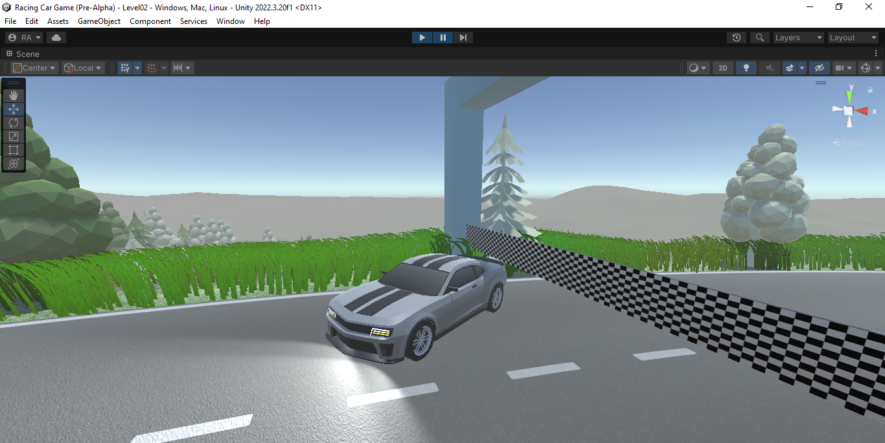
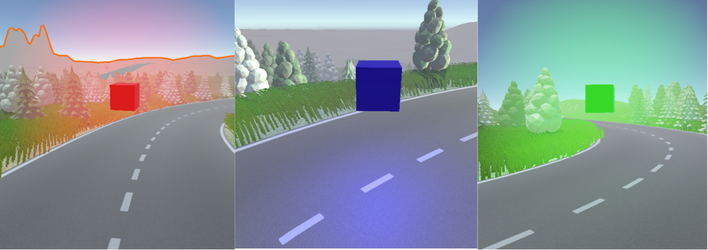
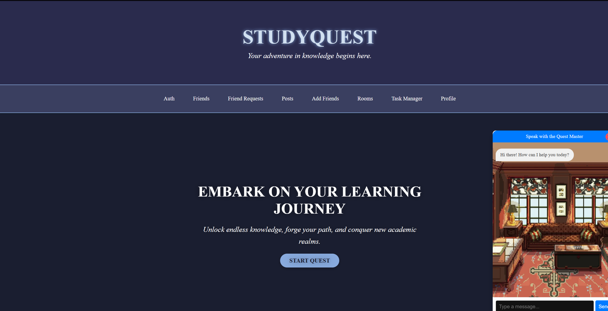
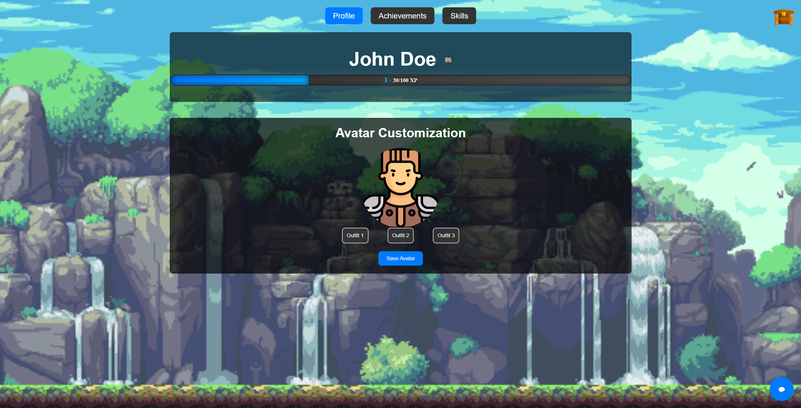

Intro
Hello there! Welcome again to my online portfolio. Though is a work in process, I hope you can find some value in it.
In the About Me section you are will find some details about who I am, what I do, and why I do it. In Projects you can check some of
the projects I ve been working on. Hope you like them!
Also, feel free to enjoy some coffee! It's fresh :)
Work
Racing Car Game

"Racing Car Game" is my first big game project. It's being developed in Unity and it started as
part of my Software Engineer I final project. The basic game mechaninc is to finish the circuit in a time record
using the three main trigger objects[glowing cubes that can boost speed (blue), reduce time(red) or increase time(green)].
Note: I REALLY need to work on that title.

Link to the Github repository
DNS Resolver
This one is just a program WireShark-alike, but whitout a GUI...[and not as good]. It's coded in Python. It takes two arguments
(domain name and root ip server) through the command prompt and tries to resolve it using iteratives quaries until it finds the
corresponding IP for the given domain.
 Link to the Github repository
Link to the Github repository
Panther Cafe
An API system developed with SpringBoot for a Coffee Shop, that can be produced as a standalone application that uses Postgresql as database.
Link to the Github repository
Study Quest
StudyQuest is an innovative daily planner designed to track tasks and enhance productivity through a unique blend of RPG
(Role-Playing Game) elements. It incorporates virtual study rooms to promote collaborative learning,
as well as AI-powered quiz creation, gamification, and social features to build an engaging and supportive user community.


Link to the Github repository
About Me
I'm Richard Aguado Mesa — a graduate student at Florida International University, where I'm pursuing a Master's degree in Data Analysis and Artificial Intelligence.
My journey into the world of technology started long before I entered academia. From a young age, I was captivated by the logic behind programming and the beauty of mathematics. I found myself drawn to puzzles, algorithms, and systems that challenged me to think critically and creatively. That passion laid the foundation for what would become a deep and ongoing commitment to the fields of data science and artificial intelligence.
Over the years, I’ve honed my skills in data analytics, machine learning, and software development. Whether I’m building models, writing code, or exploring a new dataset, I thrive on turning complexity into clarity. I'm constantly experimenting with new tools and staying updated on emerging technologies — not just to keep up with the field, but because I genuinely love the process of learning and evolving.
What drives me is the real-world impact of data and AI. I’m especially interested in how intelligent systems can be used to solve meaningful problems, optimize decision-making, and uncover insights that might otherwise go unnoticed. I believe that thoughtful, responsible use of technology can help shape a better future — and I want to be part of that change.